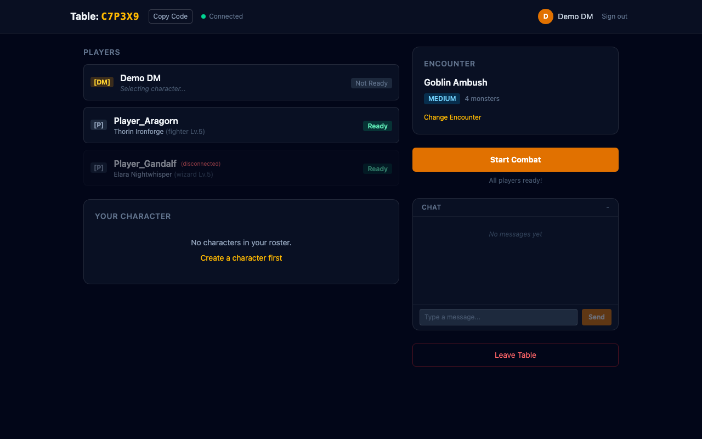
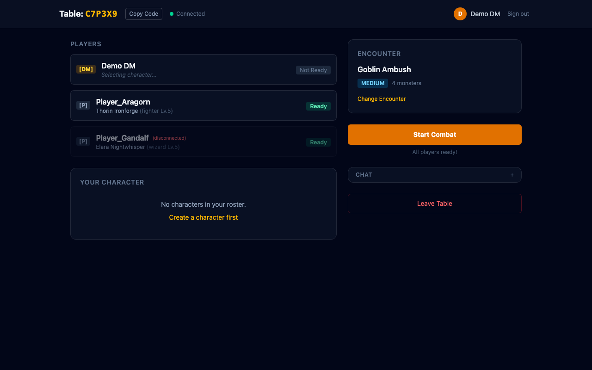
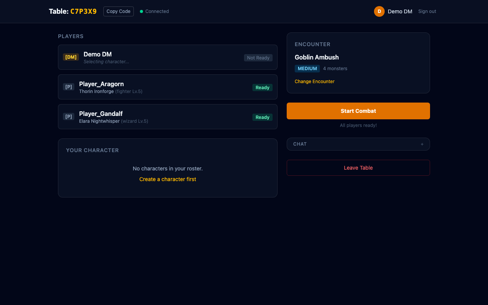

Feature branch: feat/phase-9c-resilience-polish | Closes #58–#63
The final multiplayer polish phase adds disconnect handling with AI takeover, reconnect recovery, in-game chat, and full table lifecycle management (return to lobby, disband table).
When a player loses connection mid-session, they're marked with a red "(disconnected)" label in the player list. The host detects this via Supabase Realtime presence events. After 60 seconds, the host's AI takes over the disconnected player's character.

Collapsible ChatPanel component available in both lobby and combat. Supports real-time messaging via Supabase Realtime broadcast. Message history (last 100), sender highlighting, and auto-scroll.

When a disconnected player reconnects, the host re-sends the full combat state so they resync immediately and can resume control. Here all three players are connected and ready.

handlePlayerDisconnectdecideAction AI for disconnected player turnscombat_start + state_sync re-send on presence joinreturnToLobby() resets combat for another round; disbandTable() closes session entirelyCombatEvent and LifecycleEvent type unions in multiplayer.ts